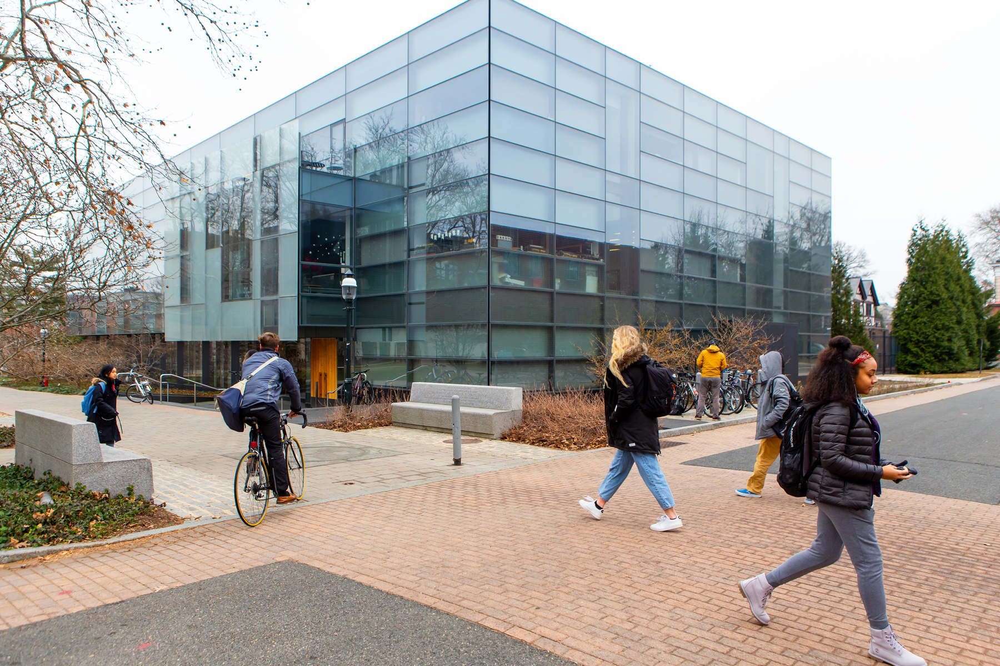
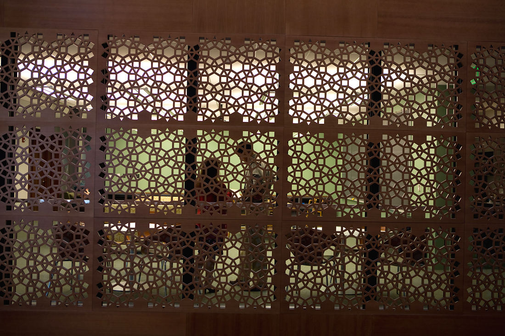
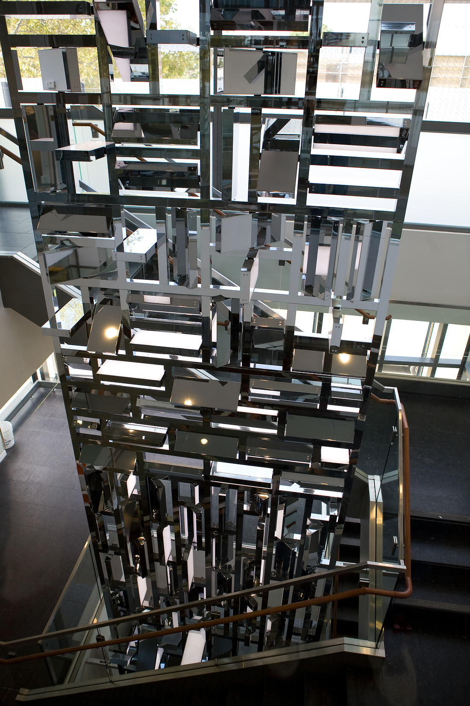
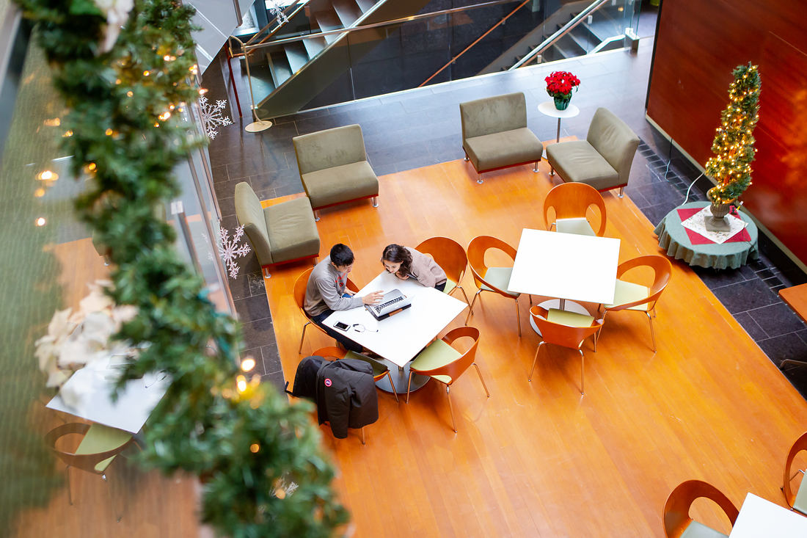
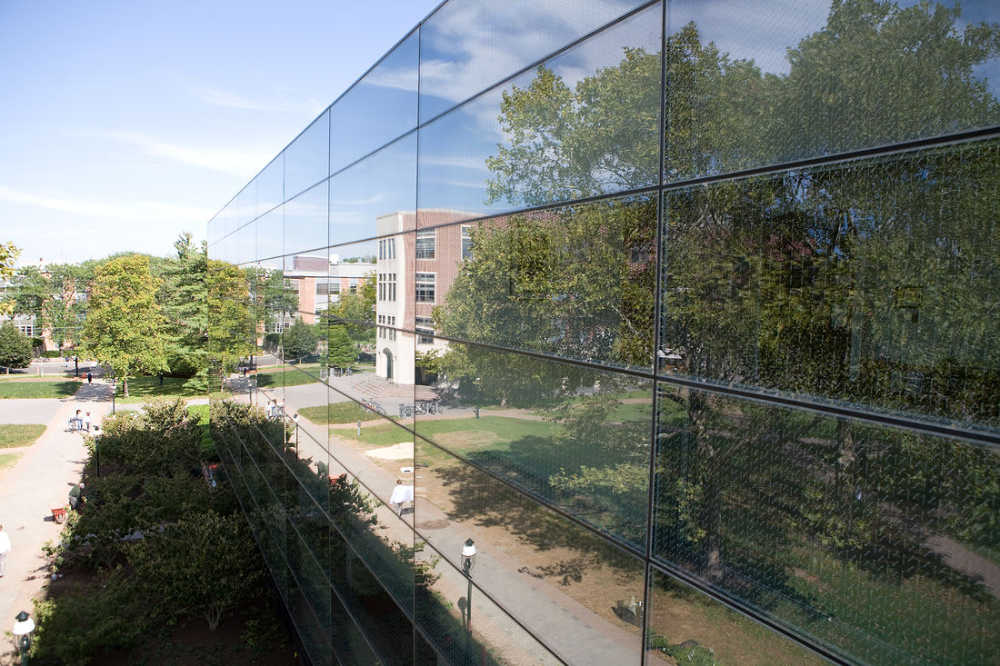
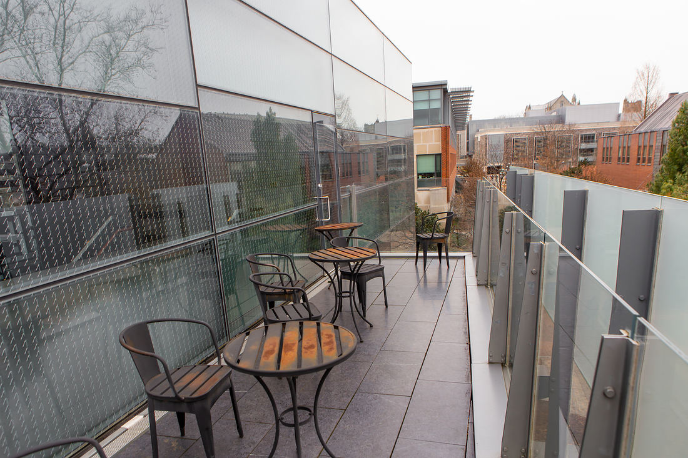

Princeton University
SHD The work that comes out of Sherrerd Hall
A building designed to bridge disciplines, and a home for the collaborations that outlast any one org chart.
The premise
Anchored to a place, not an org chart.
Departments are reorganized. Centers are chartered and sunset. The building stays, and so does much of what actually happens inside it.
Sherrerd Hall was built to put people from different fields in each other's way — a three-story atrium its architects called the “town square,” glass instead of corridors, seminar rooms that anyone can book. A good deal of what gets made here is genuinely cross-unit: the software that runs conferences and seminars, the tooling that publishes departmental sites, the records systems several groups depend on, the events that draw people in from across campus.
None of it belongs to a single academic unit, and none of it should disappear when one is restructured. SHD is where that work lives now: named for the building, hosted in the open, and available to whoever comes next.
Two doors
Where to go from here
Code & documentation
The pu-shd organization
Every project kept under SHD, with its source, issues, and runbooks in the open. Public by default; a few operational repositories stay private.
github.com/pu-shdThe physical building
Sherrerd Hall (2008)
Project record from Princeton Facilities: the design team, the sustainable systems, and the construction history of the building itself.
facilities.princeton.edu/projects/sherrerd-hall-2008What is kept here
Working systems, not archives.
These are in use. They are listed here so the next group to need them can find them.
Running an event
A stack for academic convenings — registration through check-in, badges, posters, lodging and reimbursement.
event-stackArchitecture and runbook — start hereeventkitShared core: ingest, profiles, identityticket-reconcilerFront-desk check-in and reconciliationposter-galleryPublic poster-presenter directorynametag-pressPrint-ready badge sheetslodging-plannerRoom assignment with rule checkinglink-forgePrefilled per-person links, stateless
Publishing a site
The tooling behind the department- and project-scale web presences that a place like this accumulates.
Keeping the record
Administrative systems built around conventions people already follow, so adoption costs nothing.
grants-registerProposals and awards; federates without requiring ito365gcalOne-way Outlook to Google Calendar mirror
Neighbors
Sherrerd Hall's other long-standing GitHub presence. Much of what SHD keeps started life there, and the two organizations continue side by side.
The building
Sherrerd Hall
Frederick Fisher and Partners set out to “avoid the ice cube character typical of glass buildings,” and the details are where they succeeded.
A curtain wall of tinted and fritted glass on a black granite base, with one white panel projecting over the entrance and a cherry door beneath it. Inside, the lecture hall is screened in dark cherry cut with Islamic space-filling patterns — a nod to a period when that world was a center of learning. Jim Isermann's chrome-and-light sculpture hangs the full height of the main stair. On top sits the first green roof the University built.
It opened in 2008 and is named for John J. F. Sherrerd, Class of 1952.
- Completed
- 2008
- Area
- 46,675 gross sq ft
- Design architects
- Frederick Fisher and Partners
- Construction manager
- Barr & Barr, Builders




